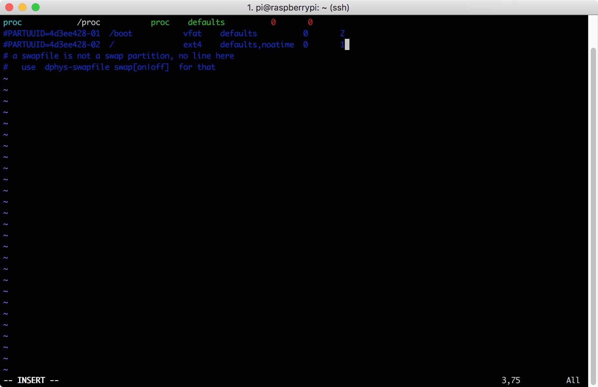
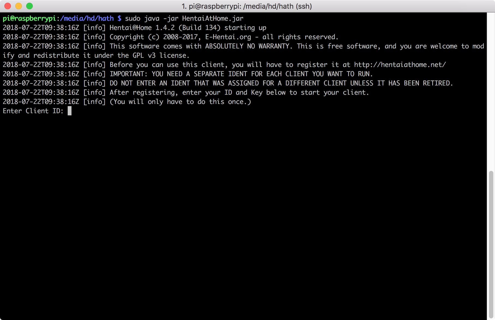

Run HentaiAtHome On Portable External Hard Drive
Install Required Tools
sudo apt-get install screen
sudo apt-get install vim
sudo apt-get install openjdk-9-jdk
sudo apt-get install openjdk-9-jre
Auto Mount External Hard Drive
Use
df -hcommand to check the disk and free space on the system
Use
lsblkcommand to show the hard disk partition status and partition
Use
sudo fdisk -lto view details of the hard drive and volume
The /dev/sda is the external dard drive
Use
sudo fdisk /dev/sdato edit the external hard drive, first d and then w to delete the partition table and disk on the hard disk
Once again, use
sudo fdisk /dev/sdato build disk partition
First typen
Next typep
And type1
Then press enter twice, if it showscontains a ext4 signaturemessage,
just typeYto countine, finally typewto build partition on the hard diskUse
sudo mkfs.ext4 /dev/sda1to format the partition into Ext4
Use
sudo mkdir /media/hdto create a folder, then the external hard drive will be mounted hereUse
sudo chmod 777 /media/hdto give it permission
Use
ls -lh /dev/disk/by-uuidcan see the UUID of the hard disk and partition
Use
sudo blkid /dev/sda1to list UUIDs of external hard drive partitionsRemember the UUID of external hard drive, then use
sudo vim /etc/fstabto edit fstab to let raspberry pi automatically mount the external hard drive after boot
you will see this:
 then press
then press i, the-- INSERT --will display at buttom, it means now this file can be edit  typeUUID=YOURUUID /media/hd ext4 defaults 0 2then pressESC, you will see that-- INSERT --disappear now type
now type :wq, then press enterUse
sudo rebootto reboot the device, and then usedf -hto check if the external hard drive has been mounted
Now use
sudo mkdir /media/hd/hathto create a folder, and usesudo chmod 777 /media/hd/hathto give it permission
Set up the server
You can use set-hath.sh to set up HentaiAtHome automatically
bash -c "$(curl https://raw.github.com/carry0987/Raspberry-Pi-Repo/master/HatH/set-hath.sh)"
Or just follow the tutorial below
Use
cd /media/hd/hathto go tohathfolder, then usesudo wget https://repo.e-hentai.org/hath/HentaiAtHome_1.6.2.zipto download the H@HUse
sudo unzip HentaiAtHome_1.6.2.zipto unzip H@H files
Use
screento start terminal in background you will see this just press enter to start
just press enter to start

Use
sudo java -jar HentaiAtHome.jarto start H@H Enter your Client ID and Client Key

Running
Now press Ctrl + A and then press D to detach H@H

Finish